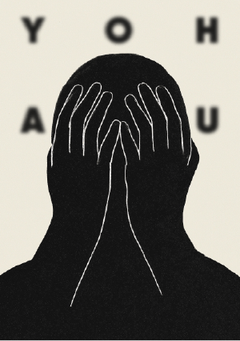

YOHAKU
Une illustration introspective sur le vide. Ce vide qu’on redoute, qu’on tente de combler, d’ignorer, d’oublier. Inspiré du concept japonais de yohaku, l’espace laissé intentionnellement vide, cette image joue avec notre peur du silence, du creux, de l’absence. Et pourtant, c’est bien dans cet espace qu’on respire, qu’on projette, qu’on ressent. Ici, même le mot cherche à habiter le vide, comme un écho maladroit à notre propre besoin de contrôle.